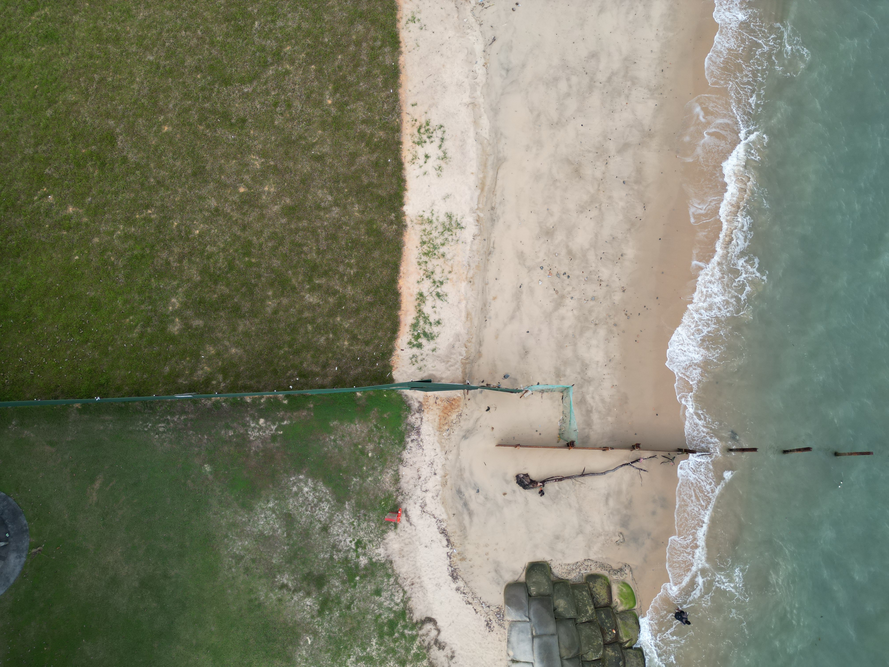

CE2407A
Tutorial 1
Sets & probability
Week 9
Assistant Professor Lei Jiarui, Gary
Civil and Environmental Engineering
National University of Singapore
Q1 · Highway routes & travel times
Question 1
Open question
Loading question…
Q2 · Wind speed & direction
Question 2
Open question
Loading question…
Q3 · Power plant reliability
Question 3
Open question
Loading question…
Q5 · Pavement performance
Question 5
Open question
Loading question…